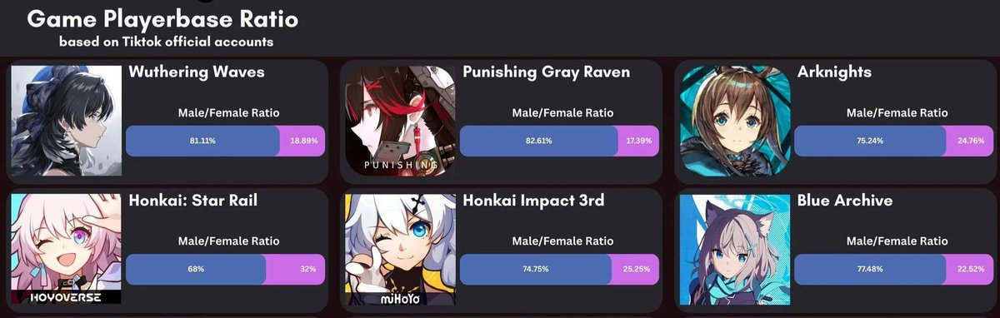
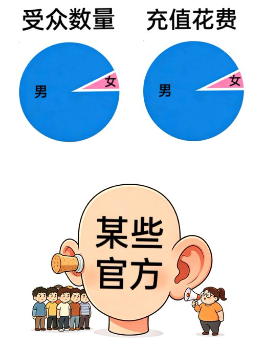
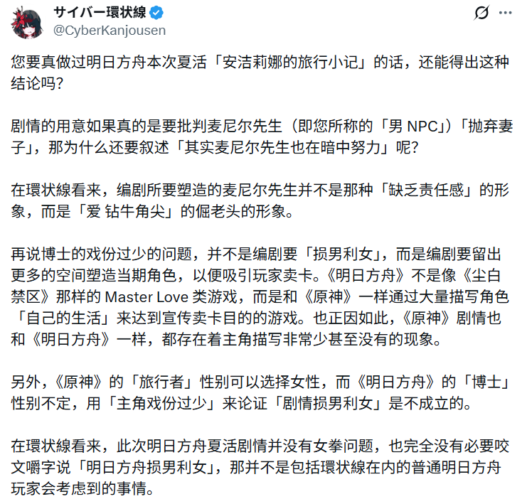

環状線对您的部分观点表示认同。不过对于「主角戏份会成为社区里反复被吐槽的点」，以環状線对于明日方舟社区的观察，環状線更倾向于认为玩家的「牢博还能在剧情后面吃口汤」之类的话是有玩梗的成分在的，而且「抱怨博士戏份少」的想法在社区并不很常见。
或许是環状線和您所观察的社区的平台不一样吧。 環状線目前浏览的明日方舟社区更多是寄托于小黑盒和 QQ 群里的（当然这些平台也主要以男玩家为主），明日方舟百度贴吧和 NGA 的话環状線并不是很关注……

或许是環状線和您所观察的社区的平台不一样吧。 環状線目前浏览的明日方舟社区更多是寄托于小黑盒和 QQ 群里的（当然这些平台也主要以男玩家为主），明日方舟百度贴吧和 NGA 的话環状線并不是很关注……



我写的二游批判能让你来引用，实在是出乎我的预料，似乎我该对你说一句：“感谢关注”。
我明白我们之间有着分歧，我也并不期望完全消弭这些；不过我同时认为，我们可能存在一些误会。所以，我希望友好的予以澄清和解释。 https://t.co/Px9M5wTpWa https://t.co/TzU3CxMolp
我明白我们之间有着分歧，我也并不期望完全消弭这些；不过我同时认为，我们可能存在一些误会。所以，我希望友好的予以澄清和解释。 https://t.co/Px9M5wTpWa https://t.co/TzU3CxMolp